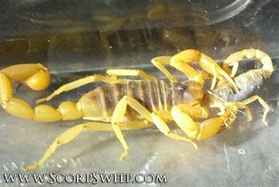
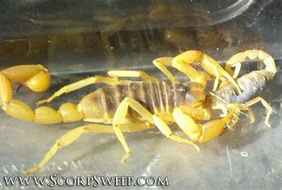
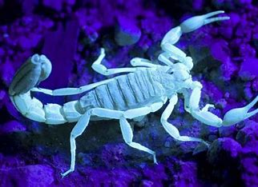
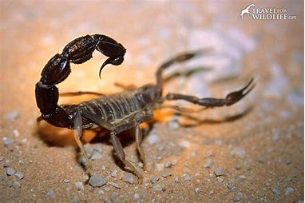
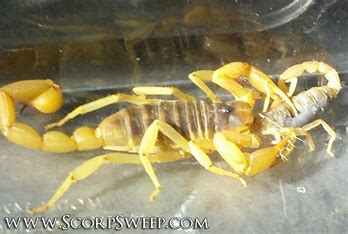

 
Scorpion, (order Scorpiones or Scorpionida), any of approximately 1,500 elongated arachnid species characterized by a segmented curved tail tipped with a venomous stinger at the rear of the body and a pair of grasping pincers at the front. Although scorpions are most common and diverse in deserts, they also live in many other habitats. Primarily nocturnal, scorpions often play the role of evildoers in fables and legends. Greek respect for scorpions prompted the naming of the constellation Scorpius, a sign of the zodiac.Scorpions are relatively large among terrestrial arthropods, with an average size of about 6 cm (2.5 inches). Scorpions exhibit few sexual differences, although males usually are more slender and have longer tails than females. Giants among scorpions include the black emperor scorpion (Pandinus imperator), an African species found in Guinea, which attains a body length of about 18 cm (7 inches) and a mass of 60 grams (more than 2 ounces). The longest scorpion in the world is the rock scorpion (Hadogenes troglodytes) of South Africa; females attain a length of 21 cm (8.3 inches). The length of the smallest scorpions, the Caribbean Microtityus fundorai, is 12 mm (0.5 inch). A few precursors of modern scorpions were comparative giants. Fossils of two species (Gigantoscorpio willsi and Brontoscorpio anglicus) measure from 35 cm (14 inches) to a metre (3.3 feet) or more, and an undescribed species is estimated to have been 90 cm (35.5 inches). Most species from deserts and other arid regions are yellowish or light brown in colour; those found in moist or mountain habitats, however, are brown or black.In addition to desert habitats, scorpions have adapted to temperate, subtropical, and tropical environments such as grasslands, savannas, and forests. They live on all major landmasses except Greenland and Antarctica. Their range extends from Canada and central Europe to the southern tips of South America (Tierra del Fuego) and Africa, and they have been accidently introduced into New Zealand and England. Scorpions have been found at elevations from sea level to 5,000 metres (more than 16,000 feet) in mountains of Europe and North and South America. A few species live as far north as southern Canada, southern Germany, and Russia. Scorpion, (order Scorpiones or Scorpionida), any of approximately 1,500 elongated arachnid species characterized by a segmented curved tail tipped with a venomous stinger at the rear of the body and a pair of grasping pincers at the front. Although scorpions are most common and diverse in deserts, they also live in many other habitats. Primarily nocturnal, scorpions often play the role of evildoers in fables and legends. Greek respect for scorpions prompted the naming of the constellation Scorpius, a sign of the zodiac.Scorpions are relatively large among terrestrial arthropods, with an average size of about 6 cm (2.5 inches). Scorpions exhibit few sexual differences, although males usually are more slender and have longer tails than females. Giants among scorpions include the black emperor scorpion (Pandinus imperator), an African species found in Guinea, which attains a body length of about 18 cm (7 inches) and a mass of 60 grams (more than 2 ounces). The longest scorpion in the world is the rock scorpion (Hadogenes troglodytes) of South Africa; females attain a length of 21 cm (8.3 inches). The length of the smallest scorpions, the Caribbean Microtityus fundorai, is 12 mm (0.5 inch). A few precursors of modern scorpions were comparative giants. Fossils of two species (Gigantoscorpio willsi and Brontoscorpio anglicus) measure from 35 cm (14 inches) to a metre (3.3 feet) or more, and an undescribed species is estimated to have been 90 cm (35.5 inches). Most species from deserts and other arid regions are yellowish or light brown in colour; those found in moist or mountain habitats, however, are brown or black.In addition to desert habitats, scorpions have adapted to temperate, subtropical, and tropical environments such as grasslands, savannas, and forests. They live on all major landmasses except Greenland and Antarctica. Their range extends from Canada and central Europe to the southern tips of South America (Tierra del Fuego) and Africa, and they have been accidently introduced into New Zealand and England. Scorpions have been found at elevations from sea level to 5,000 metres (more than 16,000 feet) in mountains of Europe and North and South America. A few species live as far north as southern Canada, southern Germany, and Russia
